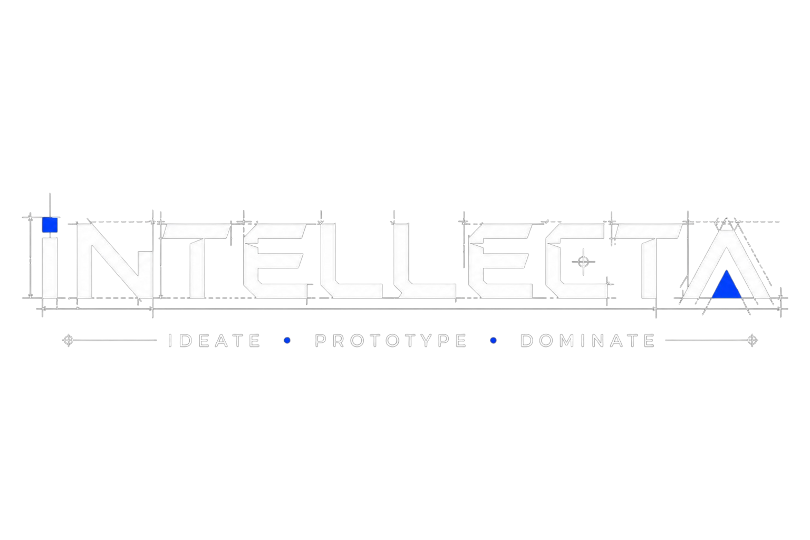
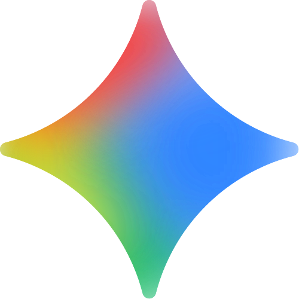
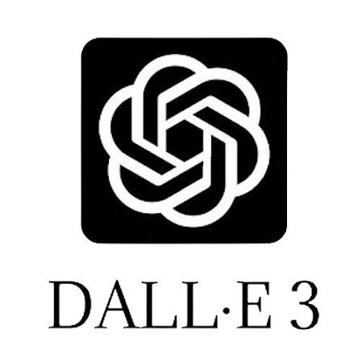
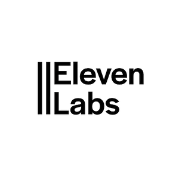

What is an LLM & Types of LLMs
What is an LLM?
A Large Language Model (LLM) is a deep learning system trained on billions of parameters. At its core, it is a supercharged prediction engine designed to guess the most statistically likely next word in a sequence.

Proprietary Models (Closed-Source)
Natively hosted by providers, accessed via secure cloud APIs. Highly optimized for massive reasoning workloads (e.g., GPT-4o, Claude 3.5 Sonnet, Gemini 1.5 Pro).
Open-Weights Models (Local / Open-Source)
Weights are downloadable and hostable on custom servers or local corporate GPUs, ensuring 100% data privacy and customization (e.g., Llama 3.1, Mistral, Gemma 2).
Domain-Specific (Fine-Tuned) Models
Foundation models specifically re-trained on narrow professional dataset corpora (medical, coding, financial, law) to handle specialized tasks with precision.
The Generative AI Modalities & Tools
Text & Logic
Claude 3.5
Reasoning & Coding
GPT-4o
Speed & Multimodality

Gemini Pro
2M Token Context
Image Synthesis
Midjourney
Cinematic Artistry

DALL-E 3
Prompt Adherence
Adobe Firefly
Commercial Safety
Video & Motion
Runway Gen-3
Camera Vector Control
OpenAI Sora
Physics-Based 3D
Pika Labs
Fast Localized Clip
Software Dev
Cursor Editor
Agentic Refactoring
GitHub Copilot
Context Autocomplete
Bolt.new
Sandbox Deployments
Voice & Audio

ElevenLabs
Realistic Cloning

Suno Music
Full Compositions

Udio
Hi-Fi Audio Tracks
No-Code Custom Data Chatbots

Google NotebookLM
Upload documents, notes, or YouTube URLs. Instantly outputs deep synthesis briefs, FAQs, and generated podcasts.
Custom GPTs (OpenAI)
Directly drop proprietary PDF guidelines inside the ChatGPT configurator interface to create shareable team bots.
Chatbase
Ingest whole URLs. Embeds a custom styled customer support widget directly onto your website in minutes.
Botpress & Voiceflow
Visual drag-and-drop conversational node designers for multi-channel corporate agent flows.
Top Vibe Coding & No-Code Builders
Bolt.new
Browser-based fullstack React, Node environment running node containers completely client-side.
Lovable.dev
High fidelity UI/UX builder, excels at translating user copy into beautiful styling features.

Cursor
AI native VSCode fork. Writes massive codebase refactors conversationally directly in local folders.

v0 (Vercel)
Generates production ready React/Tailwind frontend code structures matching standard designs.

Replit Agent
Autonomous coding system, configures database tables, sets up auth routes, and deploys online.